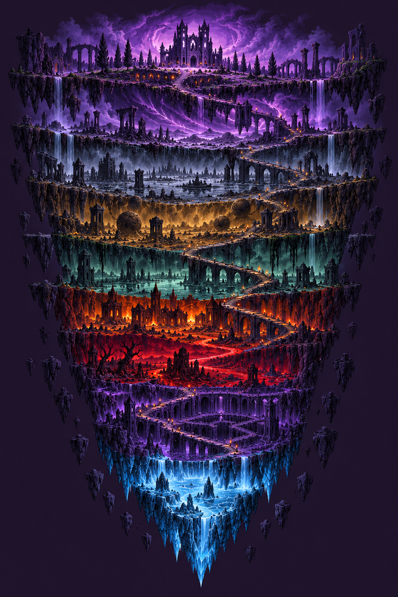
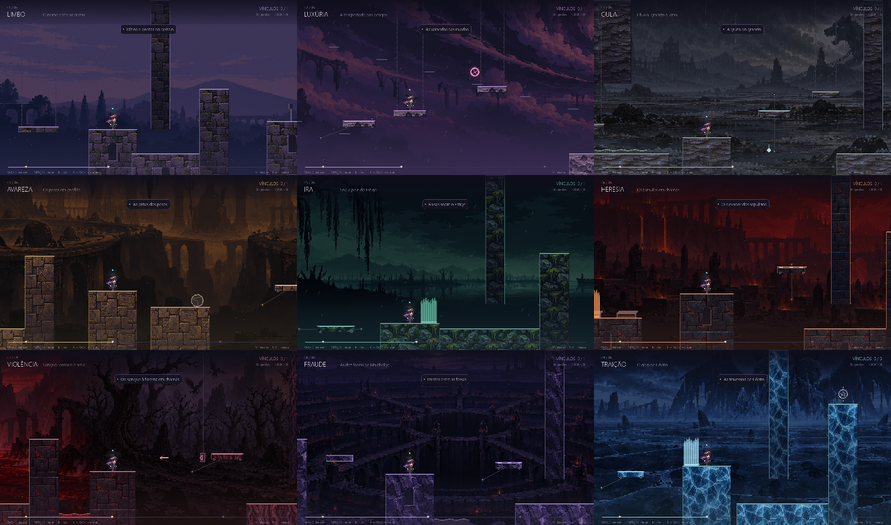
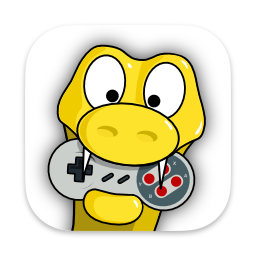
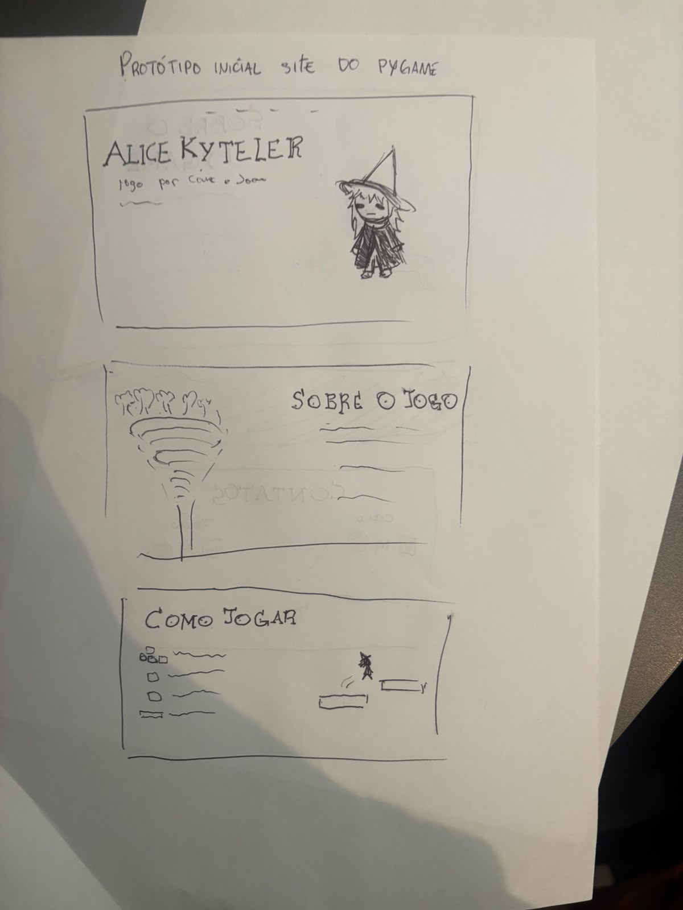
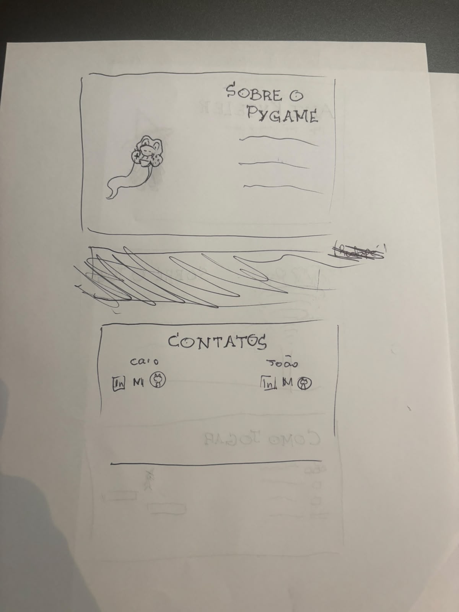
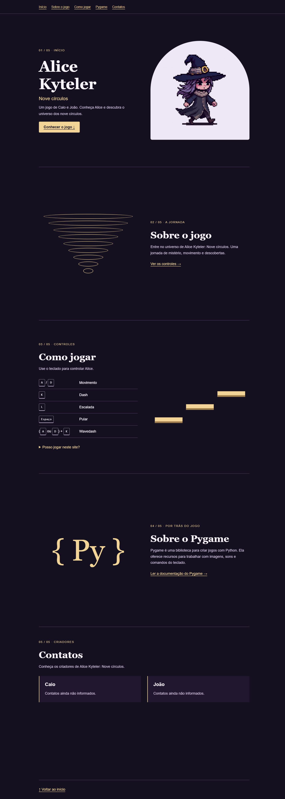

Caio Ang Jaw
Integrante do grupo.
Um jogo de Caio e João
Nove girões até a salvação. Use a magia e a agilidade de Alice para atravessar o inferno.
Pacote disponível para download. Versão do projeto de 26 de outubro de 2026.

A jornada de Alice
Após a morte, a poderosa bruxa Alice Kyteler se encontra no inferno. Para ascender ao céu e alcançar a salvação eterna, ela precisa atravessar seus nove girões e expurgar os pecados de seu corpo.
Em um lugar fúnebre e solitário, Alice usa seus poderes mágicos e sua movimentação ágil para enfrentar obstáculos e desafios.
Atravesse todos os girões e supere seus obstáculos. Busque o menor número de mortes e o menor tempo possível.
Conhecer os controles →Registros visuais da ambientação dos nove círculos. Selecione a imagem para ampliá-la.

Alice em movimento
Assista à gravação de Alice Kyteler: Nove círculos e conheça a movimentação e os desafios do jogo.
Teclado e mouse na mão
Consulte os comandos antes de começar. As combinações ficam visíveis durante a leitura.
O impulso tem uma carga, recuperada ao pousar; tocar paredes não recarrega. A mira não pausa o jogo. Para escalar, segure qualquer um dos Shift e acompanhe a barra de fôlego.
Voltar à fogueira com R conta uma morte e mantém o relógio da tentativa. Para começar do zero, use Reiniciar no menu de pausa.
Leve Alice com você
Baixe o jogo com seu código, cenários, personagem, músicas e instruções. Extraia a pasta inteira antes de começar.
Baixar Alice Kyteler — ZIPAproximadamente 66 MB · Python 3.10+ · pygame-ce 2.5.8
Pacote baseado no commit 8c41a25.
Baixe o ZIP e extraia a pasta Alice-Kyteler. Não execute o jogo de dentro do arquivo compactado.
Com o Python 3.10 ou superior instalado, abra um terminal na pasta extraída e execute:
py -m pip install -r requirements.txtNo Windows, abra Jogar.bat ou execute no mesmo terminal:
py jogo.pyUse o comando da sua instalação do Python, como python ou python3, tanto para instalar a dependência quanto para abrir jogo.py.
Execute o comando de instalação do passo 2 e abra o jogo novamente com o mesmo Python. A dependência correta do projeto é pygame-ce==2.5.8.
Construindo a jornada
Um registro das etapas, dificuldades e soluções encontradas durante a criação do jogo.
Criação do repositório, configuração dos arquivos ignorados pelo Git e inclusão da primeira descrição no README.
Registros: 33bd555, 5e3be26 e 97692df.
Inclusão das primeiras funções e do arquivo do jogo, acompanhada dos quadros de animação da bruxa para caminhada, salto, dash e escalada.
Registros: a01e244 e dd59d9b.
Adição da campanha, dos cenários, dos percursos, da movimentação e da interface. O projeto passa a incluir instruções, um atalho para iniciar e testes das mecânicas.
Registro: 0ec507b.
Inclusão de músicas e efeitos sonoros, das fogueiras e de novas animações de escalada. Revisões na movimentação e na progressão acompanham novos testes de retorno visual, áudio e corrida.
Registro: 0c131e9.
Revisão das tentativas, do relógio e da progressão. Inclusão do ranking local e de testes para registrar os tempos das corridas completas.
Registros: 9fd8ae5 e a174409.
Ajustes no início do Limbo e no fôlego da personagem, além de revisões no áudio e na cenografia. Inclusão da arte das armadilhas, de músicas para Luxúria, Gula e Avareza e de novos testes.
Registros: a135b35, b1669e4 e 8c41a25.
Resumos elaborados a partir das alterações registradas no histórico do repositório.

Por trás do projeto
Pygame é uma biblioteca para criar jogos com Python. Ela oferece recursos para imagens, sons, animações e comandos do teclado.
Ler a documentação oficial →Quem cria esse universo
Integrante do grupo.
Integrante do grupo.
O acesso ao repositório pode exigir uma conta autorizada.
Do protótipo à versão final
Espaço para documentar a primeira versão, os relatos recebidos e as mudanças feitas a partir das avaliações.



Aguardando as avaliações reais dos grupos designados e os PDFs recebidos.
O relato final reunirá os pontos positivos e negativos identificados, as imagens que os demonstram e as melhorias aplicadas.
Aguardando o jogo avaliado, as evidências e os resultados da análise.
A avaliação seguirá os dez critérios da disciplina, com notas de 1 a 5, justificativas, capturas de tela e sugestões específicas para as principais melhorias.